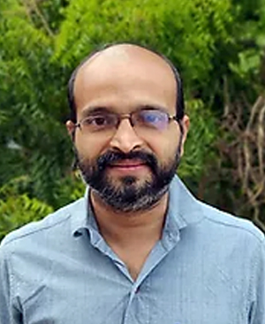

About us
We help charities and social impact organisations to make the fullest use of digital and AI technologies, in order to be as responsive and resilient as possible.
What we do
We are a foundation helping organisations use digital and AI for social good, accelerating their agency, presence and influence in the technologies that affect us all.
We work with organisations to help them embed digital and AI across their services, strategy and governance—and with sector leaders and funders to create an environment which supports and encourages this.
How we do it
We work directly with charities and social impact organisations, helping them to become more responsive to the changing needs, behaviours and expectations of the individuals and communities they serve, more test-driven in the way they deliver value—and more confident in embedding digital principles into their organisational strategy, culture and services.
Take a look at Our Work for more information on all our services currently available.
We also work closely with organisations within the wider support infrastructure—funders, trusts and foundations; training and advisory bodies; government; policy and advocacy collectives; influential partners; sector leaders and digital, data, design and AI agencies and specialists—to improve the quality, range and uptake of social organisations’ digital tools, training, funding and advice.
Take a look at Our Work with Funders and Partners for further information.
Our mission
It is our mission to ensure that every social impact organisation has the knowledge, confidence and opportunity to harness the full power of digital and AI. Our work in removing barriers, identifying opportunities, devising initiatives and sparking connections enables organisations to become stronger and more sustainable within themselves—and more responsive to the changing needs, behaviours and expectations of their communities.
By building the digital capacity of social sector organisations, Nlightn Foundation helps them to become better equipped to thrive in the face of rapid social, economic and technological change.
Meet our founders

Sreekanth Sreedharan
Co-Founder & CEO
Sreekanth has a prior background in tech—Engineering in Computer Science and TCS—where he learnt the potential of using technology for social purposes. His business education (IIM Ahmedabad) and entrepreneurial stint as Co-founder of Iksula instilled a startup spirit: taking up challenges in a structured way and staying hopeful. After that he went through a transformational journey with more than a decade of work on school education at CSR@Wipro and Azim Premji Foundation, which created a strong desire to take education to more and more people. He is a B.Tech from College of Engineering, Thiruvananthapuram, with 6,000+ hours building AI applications and a pioneer in using AI for educational good. To him, equality may be a lofty dream, but removing the everyday inequalities we see in front of us is doable in our lifetime. He is a strong supporter of National Education Policy 2020 and strives to do his bit to take foundational education to all.

Sreenath Manickom
Co-Founder & COO
Sreenath brings deep expertise in GenAI applications, quality assurance, and user experience. With 15+ years at Volvo spanning India and US operations, he specializes in GenAI application development, quality assurance, and operational excellence. His focus on user experience ensures our platform is intuitive and effective for both students and parents. Expert in client requirements and user-centric design.